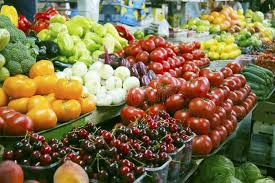

The Digital Edge in Farming
We facilitate direct transactions, reducing costs for buyers and increasing profits for farmers. Verified quality and secure payments.


Direct Logistics
End-to-end supply chain management across East Africa.
Connecting Ugandan producers to industrial buyers worldwide.
Explore MarketplaceWe facilitate direct transactions, reducing costs for buyers and increasing profits for farmers. Verified quality and secure payments.

End-to-end supply chain management across East Africa.